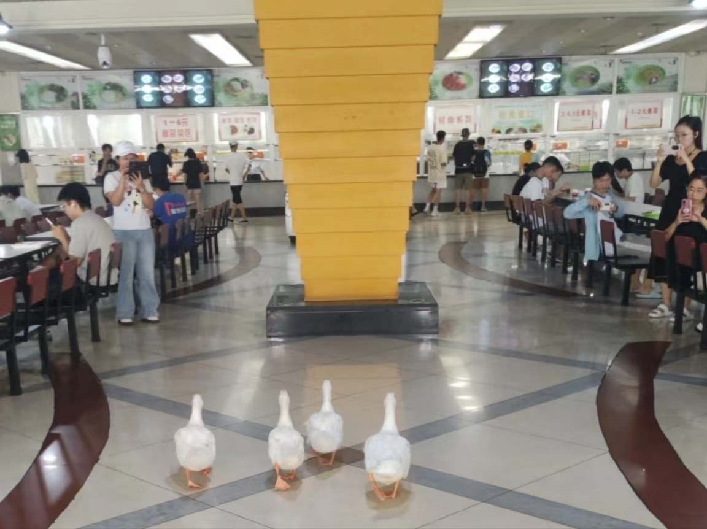
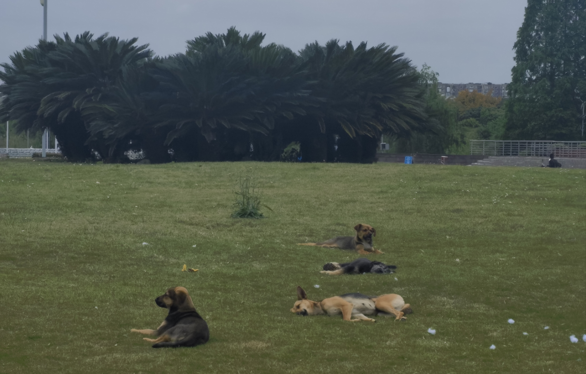

Animals On Campus
The ecological environment on the campuses is good, and you can see the presence of many active creatures. Due to spending the majority of my time in Jiang’an over the past three years, I can only provide a guide to observing animals specifically in this campus.
The most noteworthy aspect is that Jiang’an has a vast water area, with the Jiang’an River crossing the campus, and a beautiful artificial lake called Mingyuan Lake. Next to Mingyuan Lake is a small hill called Bugao Hill, which is said to be formed by using the soil excavated from the lake. There is also a large area of groves here, so there are a variety of birds that inhabit this area, since they can feed on the abundant fish in the lake.
Walking by the lake or on the long bridge, you can always see ducks swimming in the water. During the breeding season, you can also see a string of adorable ducklings. There are also egrets perching on treetops or gliding over the water surface. Sometimes you can see black swans swimming together on the water at a slow speed. During the summer vacation, some students even saw groups of white geese running into the cafeteria.

Of course, there are many other waterbirds that I can’t name specifically, freely living here.
The lake is not calm during the day, but when night falls, it becomes quiet, with only the sound of frogs chirping all around. During an evening stroll by Mingyuan Lake, you may come across many frogs on the ground. Some may be motionless, while others may suddenly jump, giving you a startle. It is true that there are snakes on campus, as several students have witnessed. Although I haven’t seen them myself, I feel a bit apprehensive while walking near the lake or in the woods where human presence is rare.
When it comes to animals on campus, topics about cats and dogs cannot be avoided. There are many stray cats on campus, and students with compassion have even made special cat houses and provided food for them. Some students even take the stray cats to the hospital for medical treatment. Stray dogs are not as fortunate as the cats on campus, and they are less commonly seen. They generally keep a distance from people and seldom wag their tails compared. Based on my observation, they enjoy playing on the lawn most.

I hope that everyone and the animals can continue to live in harmony.